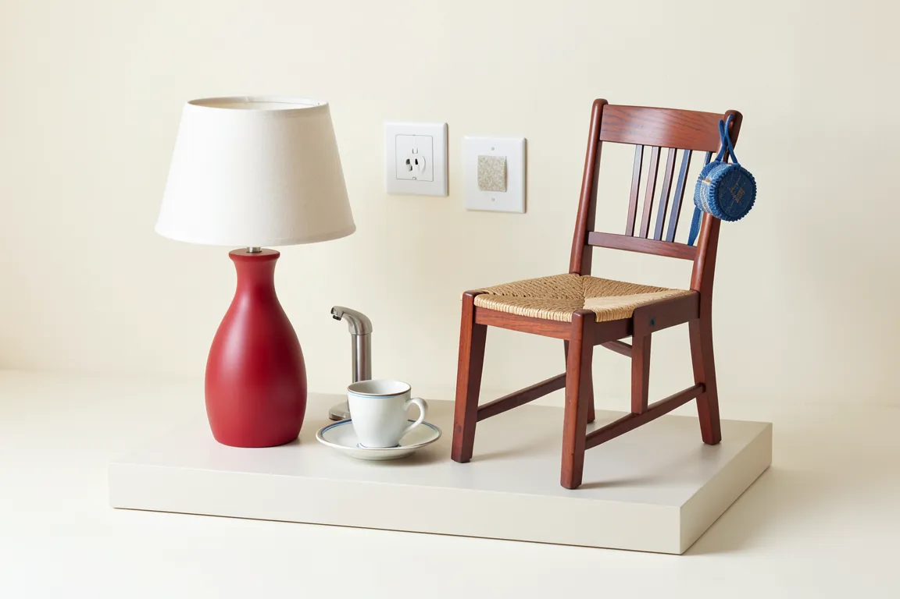

Простая домашняя утварь общин шейкеров: стулья с лестничной спинкой, рейки с колышками, овальные коробки и сундуки из сосны, клёна и вишни, сделанные для пользы без накладного орнамента.

Главная идея
Предмет, хорошо служащий своему назначению, красив; мастер не добавляет орнамента, показывает каждое соединение и делает каждую вещь с честной заботой.
Принципы дизайна
Делайте каждую вещь под её назначение; убирайте каждую деталь, у которой нет работы.
Берите тонкие лёгкие части: стойка стула 25–32 мм и перекладина 12–20 мм.
Показывайте соединение: ласточкин хвост, паз или шип остаются на виду.
Берите дерево в простой отделке: масло, воск или тонкая матовая краска красного, жёлтого, синего или зелёного цвета.
Вешайте каждый стул на рейку с колышками 7–9 см, чтобы пол оставался свободным для метлы.
Делайте коробку или ящик в 3–7 вложенных размеров, с «ласточкиными» пальцами из тонкого клёна.
Держите линию прямой, а точение простым: шаровидный навершник и конус — единственное украшение.